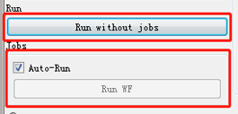

数据库控件¶
Database控件¶
用来保存计算结果。
Input |
Output |
|
|---|---|---|
None |
Database |
LaunchPad |
Database服务器信息:
hostname 设置主机名称
port number 设置端口号
database name 输入数据库名称
collections of specified database 指定数据库集合
username 输入用户名
password 输入登录密码
LaunchPad服务器信息:
hostname 设置主机名称
port number 设置端口号
database name 输入数据库名称
collections of specified database 指定数据库集合
username 输入用户名
password 输入登录密码
在参数设置窗口的最下方设有Auto-Run的选项，若勾选此项，数据库可自动连接；若不勾选此选项，可通过点击Send SearchEngine控制。

Manager控件¶
用于管理工作流和工作任务。
Input |
Output |
|||
|---|---|---|---|---|
Workflow |
Workflow list |
Launchpad |
Database |
Jobs |
双击打开控件，可看到Manager控件不需要设置参数，它可以用来查看已经配置好的工作流信息。Workflow对话框中显示当前工作流具体信息，包括工作流的创建时间、元素种类、材料结构等等。点击Add workflow也可添加新的工作流。
同样地，在参数设置窗口的最下方设有Auto-Run的选项，若勾选此项，可自动开始运行；若不勾选此选项，可通过点击Send data控制。

Jobs控件¶
用于执行工作流，提交任务。
Input |
Output |
|||
|---|---|---|---|---|
Jobs |
FWorker |
Table |
Database |
FWorker |
Jobs控件不需要进行参数设置，它用于执行工作任务。在提交任务之前，需确认工作任务(manager)、工作流数据库(lpad)、结果数据库配置(database)、计算服务器(fworker)是否已配置完成。 因此，Jobs控件能够汇总连接至它的全部数据信息。
Launchpad info 启动台信息
Database info 数据库信息
Workers info 服务器信息
Workflow 具体工作流信息
{kind=link}
确认完成后，可以通过点击Run without jobs直接运行。
Jobs控件同样在窗口的最下方设有Auto-Run的选项，若勾选此项，可自动运行；若不勾选此选项，可通过点击Run WF控制。
{kind=link}